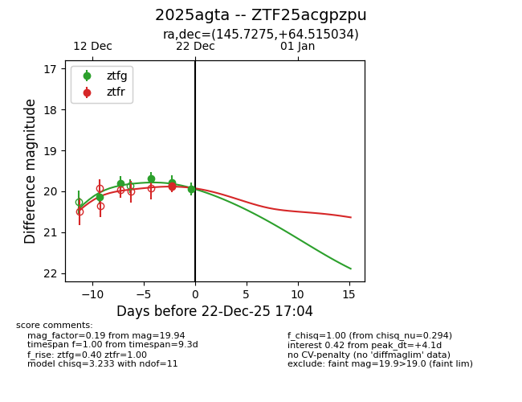
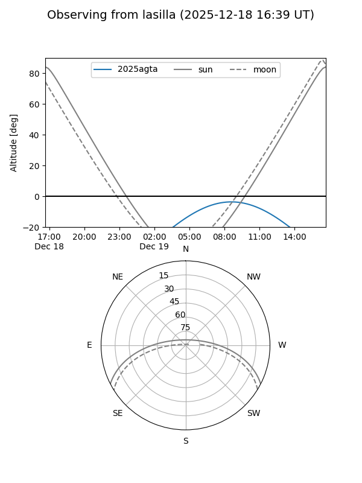
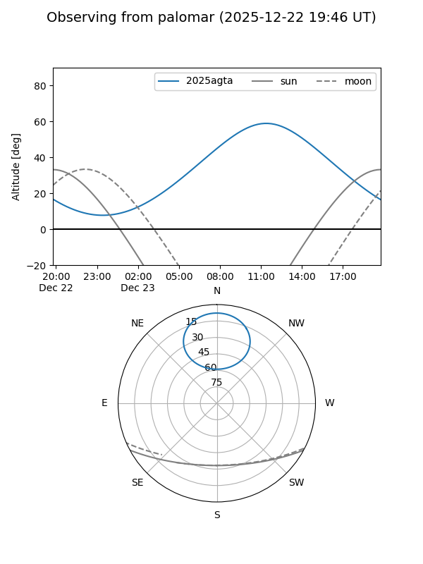

2025agta
Target 2025agta at 2025-12-31 18:00
Aliases and brokers:
FINK: link
Lasair: link
ALeRCE: link
TNS: link
YSE: link
alt names
ZTF25acgpzpu (ztf,fink_ztf)
2025agta (tns,yse)
Coordinates:
equatorial (ra, dec) = 145.7275,+64.51503
equatorial (HMS+DMS) = 09:42:54.61,+64:30:54.12
galactic (l, b) = (148.1403,+42.23198)
Flags:
Photometry:
last ztfg=19.94, ztfr=20.01
6 ztfg, 3 ztfr detections
Lightcurve

Visibility


Additional plots